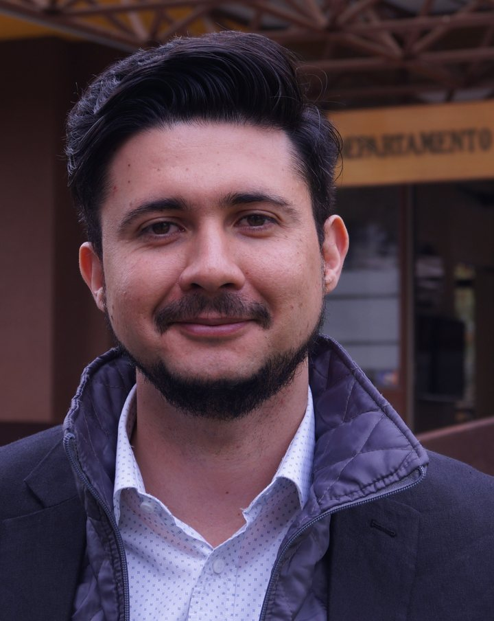
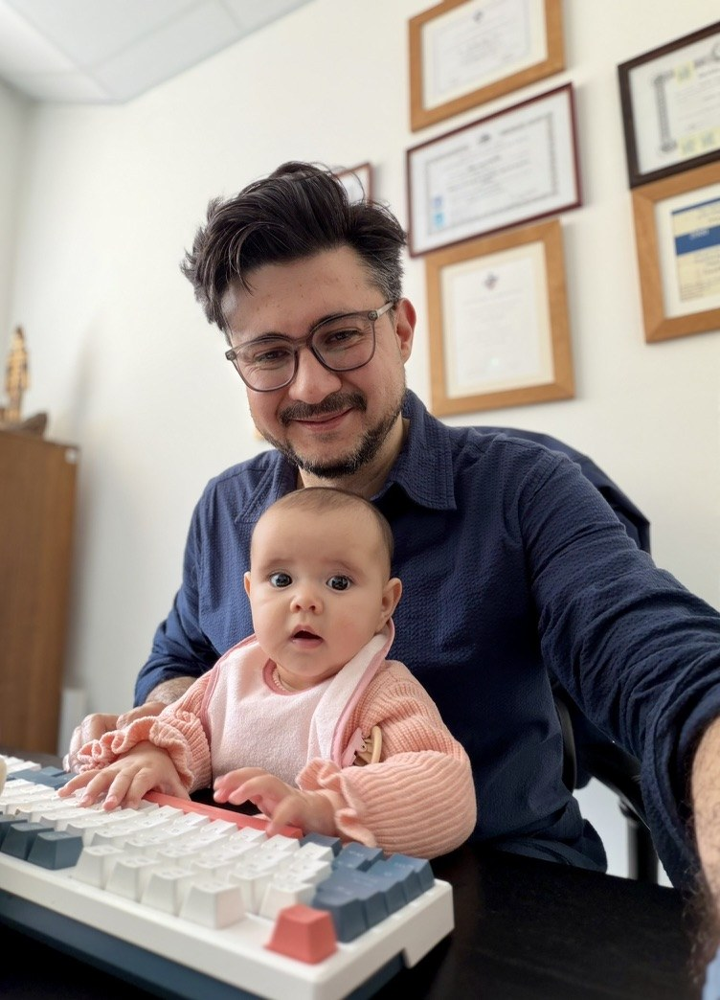

Electrónica de potencia · Electromovilidad · Almacenamiento
Soy Matías Díaz, profesor asociado del Departamento de Ingeniería Eléctrica de la Universidad de Santiago de Chile (USACH), investigador de E2Tech, cofundador de E2 Ingeniería y Managing Director de CharIN en Chile.
Mi trabajo se desarrolla en la intersección entre investigación, ingeniería y desarrollo tecnológico, con foco en electrónica de potencia, energía y electromovilidad. Busco conectar la generación de nuevo conocimiento con su aplicación en problemas reales, desarrollando tecnologías, impulsando su transferencia hacia la industria y contribuyendo al avance de la normativa y la certificación.
A través de la academia, la investigación y la colaboración con empresas e instituciones, trabajo para que nuevas ideas puedan convertirse en soluciones concretas y contribuir al desarrollo de una industria tecnológica más innovadora, sostenible y hecha en Chile.

Cada línea se sostiene en proyectos con financiamiento competitivo y en la infraestructura del laboratorio E2Tech.
Topologías, modulación y control predictivo · FONDECYT
Carga ultra-rápida modular y EVSE configurable · FONDEF, ANID
Caracterización, integración y pilotos · CORFO ReBatVE, E2BS
Carga bidireccional y servicios de red · E2 Ingeniería
Diseñado y fabricado por el equipo de E2Tech y E2 Ingeniería: producto certificado, 2 patentes y 1 licencia tecnológica transferida a la industria.
BioBioChile · 2024El consorcio ReBatVE (CORFO, US$4M, 11 socios, entre ellos el Ministerio de Energía y el Coordinador Eléctrico Nacional) llevó almacenamiento de segunda vida a Lollapalooza Chile 2026, tras medir la energía del festival en 2025.
Cooperativa · ADN · 2026Levantamiento en terreno y análisis del sistema eléctrico y del consumo de energía en la Base Aérea Antártica Presidente Eduardo Frei Montalva.
AntárticaMi investigación en E2Tech se desarrolla junto al sector público y privado, con transferencia a través de E2 Ingeniería y trabajo en estándares a través de CharIN.
Centro de investigación en tecnologías de energía eléctrica. Director entre 2022 y 2024; hoy investigador. ~US$3M en proyectos de transferencia, además de ReBatVE.
Dirección de 62 tesis y memorias: 2 tesis doctorales y 1 de magíster en curso, 13 tesis de magíster y 46 memorias de ingeniería finalizadas. Los egresados trabajan hoy en la industria de la energía, la academia y el sector público.
Equipo y alumniCofundador de Spin-off USACH: primera empresa en diseñar y construir cargadores de VE en Chile.
Managing Director desde mayo de 2024 de la asociación de estándares de carga (CCS, MCS). Asesor técnico de la Estrategia Nacional de Electromovilidad.
104 apariciones registradas entre 2014 y 2026, con presencia recurrente en El Mercurio, Las Últimas Noticias, CNN Chile, T13, 24 Horas, Cooperativa y BioBioChile.
Formación, cargos y distinciones, del más reciente al más antiguo. El detalle está en el currículum.
Ph.D. in Electrical and Electronic Engineering, University of Nottingham.
Doctor en Ingeniería Eléctrica, Universidad de Chile.
Magíster en Ciencias de la Ingeniería, USACH.
Ingeniero Civil en Electricidad, USACH.
Papá de Matilda Díaz, trabajo full time.

Director del Departamento de Ingeniería Eléctrica, USACH.
Managing Director, CharIN e.V. Chile.
Cofundador y CTO, E2 Ingeniería.
Director del centro E2Tech y Subdirector de Investigación y Postgrado del DIE.
Director del Magíster en Ciencias de la Ingeniería Eléctrica, USACH.
Director del Diplomado en Electromovilidad, USACH.
Subdirector de Vinculación con el Medio, DIE USACH.
Profesor Asociado, DIE USACH. Investigador de E2Tech.
Subdirector, Escuela de Ingeniería, DUOC UC.
Ingeniero de investigación, Universidad de Chile.
Top 2% de científicos más citados del mundo, Stanford University. Tres años consecutivos.
Premio ICONO, Facultad de Ingeniería USACH.
Ingeniero Sobresaliente, AIE-IEEE.
Best Paper Honorable Mention, IEEE ICA-ACCA 2024.
Best Paper Award, SMART 2024, Dubái.
Premio Nacional de Electromovilidad, Fidelmov.
Premio ICONO al mejor investigador joven, Facultad de Ingeniería USACH.
Best Paper Award, EVER 2018, Mónaco.
Premio a la Mejor Tesis Doctoral, Academia Chilena de Ciencias.
Best Paper Award, EVER 2014, Mónaco.
Best Paper Award, EVER 2013, Mónaco.
Tesis de pregrado y postgrado, prácticas y posiciones de I+D en electrónica de potencia, electromovilidad y almacenamiento, en el laboratorio E2Tech de la USACH.